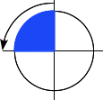

{{ CSSRef() }}
The <angle> CSS data type represents an angle value expressed in degrees, gradians, radians, or turns. It is used, for example, in {{cssxref("<gradient>")}}s and in some {{cssxref("transform")}} functions.
{{EmbedInteractiveExample("pages/css/type-angle.html")}}
Syntax
The <angle> data type consists of a {{cssxref("<number>")}} followed by one of the units listed below. As with all dimensions, there is no space between the unit literal and the number. The angle unit is optional after the number 0.
Optionally, it may be preceded by a single + or - sign. Positive numbers represent clockwise angles, while negative numbers represent counterclockwise angles. For static properties of a given unit, any angle can be represented by various equivalent values. For example, 90deg equals -270deg, and 1turn equals 4turn. For dynamic properties, like when applying an {{cssxref("animation")}} or {{cssxref("transition")}}, the effect will nevertheless be different.
Units
deg- Represents an angle in degrees. One full circle is
360deg. Examples: 0deg, 90deg, 14.23deg.
grad- Represents an angle in gradians. One full circle is
400grad. Examples: 0grad, 100grad, 38.8grad.
rad- Represents an angle in radians. One full circle is 2π radians which approximates to
6.2832rad. 1rad is 180/π degrees. Examples: 0rad, 1.0708rad, 6.2832rad.
turn- Represents an angle in a number of turns. One full circle is
1turn. Examples: 0turn, 0.25turn, 1.2turn.
Examples
Setting a clockwise right angle
 |
90deg = 100grad = 0.25turn ≈ 1.5708rad |
Setting a flat angle
 |
180deg = 200grad = 0.5turn ≈ 3.1416rad |
Setting a counterclockwise right angle
|  |
-90deg = -100grad = -0.25turn ≈ -1.5708rad |
Setting a null angle
 |
0 = 0deg = 0grad = 0turn = 0rad |
Specifications
| Specification |
Status |
Comment |
| {{ SpecName('CSS4 Values', '#angles', '<angle>') }} |
{{ Spec2('CSS4 Values') }} |
|
| {{ SpecName('CSS3 Values', '#angles', '<angle>') }} |
{{ Spec2('CSS3 Values') }} |
Initial definition. |
Browser compatibility
{{Compat}}
See also